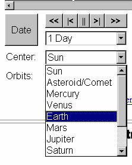

I presumed that Robert was defending a pure Geocentric system, in which all planets orbited a stationary Earth as proposed by Aristotle and Ptolemy. However my presumption was incorrect. As he states above, he is defending a system in which all planets but the Earth do orbit the Sun. Tycho Brahe proposed such a system. Here are links to pages that demonstrate the various systems.
- The Universe of Aristotle and Ptolemy
- An impressive online animated simulation of three systems: Ptolemy (Geocentric), Brahe (Geocentric), and Copernicus (Heliocentric) CLICK HERE.
Conduct another "experiment"
Again, at the following web site, run the simulation:
http://www.astroarts.com/simulation/cometary-orbit.php
1. Enter 55P in the "Object Name" box.
2. Press "Search" button.
3. Press "Show Orbit" button.
4. Run the simulation as before, but in the "Center" drop down
menu, select "Earth" rather that "Sun". Note that the Earth appears to remain
stationary, and the Sun and all the other planets appear to revolve
around the Earth.
Note you can toggle the "Center" menu to any planet, and you do not change any of the mechanics of the simulation, you only change the presentation of the graphic, and artificially center everything on the selected planet. This is basically a matter of perception. You can center everything on the Earth, or Mars, or Jupiter for that matter, and the whole universe is presented as revolving around the selected center, but nothing else changes (in particular, no epicycles are needed to introduce retrograde motion).
So I think this simulation shows rather effectively, whether the Earth is in the center, or the Sun is at the center, can be purely a matter of perception, and not physics. So it is quite possible for one person to perceive the Earth as orbiting the Sun, and someone else to perceive the whole universe as orbiting the Earth, and yet, hard as it may be to believe, both can be quite "right" at the same time, and neither can "prove" the other wrong, because everything else is absolutely identical for both of them.
Before you say that's just plain crazy, how does the Heliocentrist Christian explain this? -
Josh 10:13 And the sun stood still, and the moon stayed, until the people had avenged themselves upon their enemies. Is not this written in the book of Jasher? So the sun stood still in the midst of heaven, and hasted not to go down about a whole day.
The Heliocentrist Christian, who believes that the Earth spins on its axis once in 24 hours while at the same time orbiting the Sun, generally has no problem accepting this verse as absolutely true. The answer is easy. The Earth just stopped spinning on its axis for 24 hours, and in that way the Sun stood still for a whole day. How? Simple. God willed it, and it just happened. After all, nothing is impossible with God, right? Well thank you very much. If God could maintain the status quo, while at the same time stopping the Earth on its axis, is it just possible that THAT is really the norm, and it was really the universe that stopped its motion around the earth? Well, can you prove it didn't?
CAI on their index page advertises my discussion with Robert Sungenis as follows:
Responding to our $1,000 Geocentric Challenge, enthusiast Michael Scheifler entered with full guns blazing to kill off the Geocentric prevaricators. To his utter shock, using charts and graphs he had marshaled from NASA and other sites, Michael discovered just the opposite of his original contention. In the end, he confessed that he had no way to make a case against Geocentrism. Click above to see the "confession."
To set things straight, I set out to show that the prevailing geocentric view in the 15th century, accepted by the Catholic Church, that all the planets orbited the earth in perfect circles (Aristotle / Ptolemy), was rather easily consigned to the rubbish heap by something as simple as observing the phases of Venus through a telescope. But, as evident in the above discussion, Robert does not defend the pure geocentric systems of Aristotle and Ptolemy, but rather the modified system of Tyco Brahe, which in the strictest sense is anything but what the Catholic Church historically accepted as true. The Tychonic system concedes that the Earth rotates on its axis in 24 hours, and that all the planets but Earth orbit the Sun, without Ptolemaic epicycles. It is really all but conceding heliocentrism, turning it upside-down in a manner of speaking, by artificially setting the otherwise overwhelmingly heliocentric system in a last gasp minimalist geocentric context.
So my "original contention" stands, I have not been "shocked", nor have I taken an "opposite" view. I quite firmly believe that the heliocentric system IS reality, and that this does NOT contradict the Bible in any way. But at the same time, and from the very beginning, I fully recognized that if Robert so chooses, there is nothing that can persuade him that his Geocentric perception is wrong. If he so desires, he will always be able to adapt his view to include any contrary "proof", or explain it away to his satisfaction, and still maintain that his Earth-centered system "works". But at the same time, his facade of irrefutability, and strictly literal interpretation of the Bible on this topic, in no way insure that his geocentric view is reality.
Other discussions with CAI:
 A Rebuttal to Jacob Michael of
CAI on the Sabbath / Sunday Issue
A Rebuttal to Jacob Michael of
CAI on the Sabbath / Sunday Issue
 A Response to Catholic Apologetics
International's "Sacrifice Challenge"
A Response to Catholic Apologetics
International's "Sacrifice Challenge"

{kind=link}
{kind=link}
{kind=link}
{kind=link}